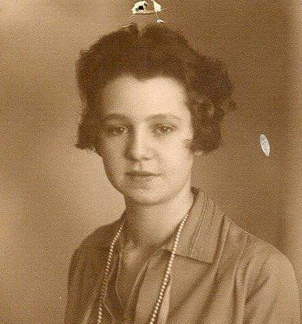
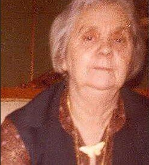

Ernst Evert Trysberg.

Född 15 apr 1910 i Sankt Anna (E) 15 .
Död 5 aug 1957 i Hagalund, Norrköping Gottsätter 1:2, Gottsäter, Rönö (E) 2 .
|
Född
3 jul 1912
i Nr 37, Boda, Norra Sandsjö (F)
1
.
Död 24 mar 1985 på Idrottsgatan 49, Gård 3, Kv Linjen, Ektorp, Norrköping, Norrköpings Borg (E) 2 . |
 |
|
Margit Elisabet Trysberg f Håkansson
Född 3 jul 1912 i Nr 37, Boda, Norra Sandsjö (F) 1 . Död 24 mar 1985 på Idrottsgatan 49, Gård 3, Kv Linjen, Ektorp, Norrköping, Norrköpings Borg (E) 2 . |
|||

Margit Elisabet på äldre dagar
|
Gift
22 dec 1934
Ernst Evert Trysberg.
Född 15 apr 1910 i Sankt Anna (E) 15 . Död 5 aug 1957 i Hagalund, Norrköping Gottsätter 1:2, Gottsäter, Rönö (E) 2 . |
Framställd 6 nov 2026 med hjälp av Disgen version 2025.
 Född
28 jan 1937
i Rönö (E)
Född
28 jan 1937
i Rönö (E)